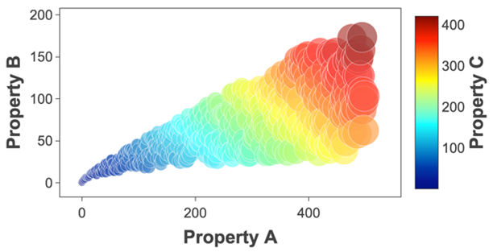

Digital Transformation
One key aspect of digitalisation is to turn data into value for companies.
The data analytics/visualisation software that will be developed in this
project is key to unlock the potential of big-data to provide actionable
insights to drive business growth for many industries in the next 10-20
years. The software called Wiz is a one-stop shop for real-time data
analysis and visualisation. Scientists and non-scientists alike can use Wiz
to better understand their data. Further, because Wiz is web-based, anyone
with a dataset and a browser can use it: without the need to code or even
download a software.

Wiz is now up and running on Siemens’ MindSphere as an app. We are now able
to read data in “real-time” and unravel the complexity of data by splitting
their relationships through 5 dimensional (5D) visual analytics, performing
multivariate data analysis such as principal component and linear
discriminant analyses, all in vivid, publication-ready Figures!